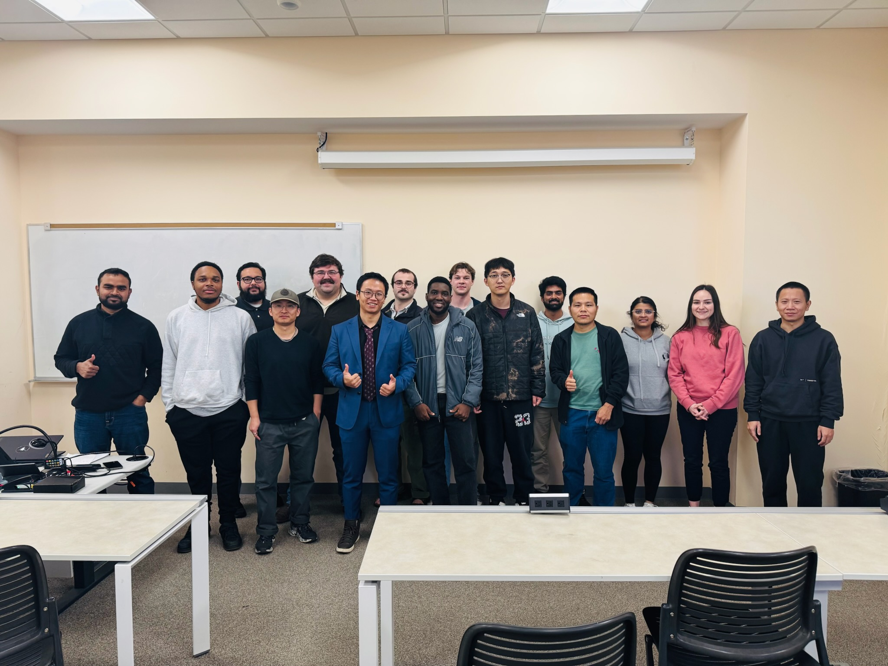

Fundamentals of AI for Power Electronics Design
University of Arkansas · Graduate course · 3 credits · 40 hours
Topics include metaheuristic optimization, machine learning, generative-AI engineering, reinforcement learning for control, and project-based implementation.

Graduate-course outcome: Fundamentals of AI for Power Electronics Design